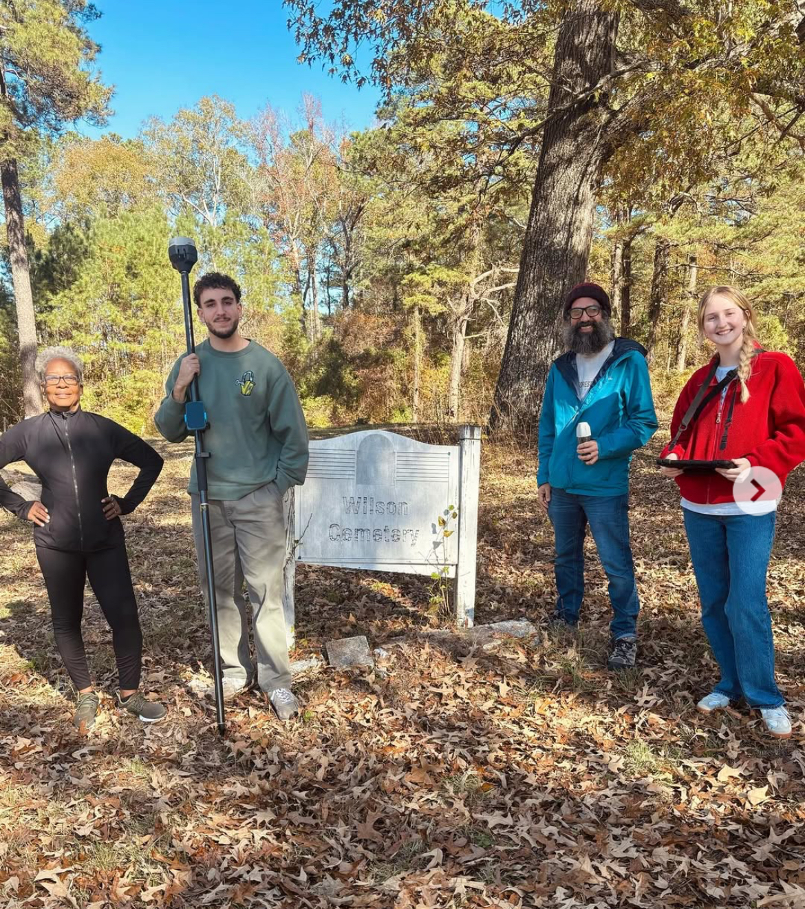

Hello! My name is Eli Broun and I am early-career geospatial professional with experience spanning GIS, land surveying,
geospatial data collection, spatial analysis, and community-based research.
Skilled in translating complex spatial data into meaningful insights through data
visualization, interactive mapping, and field data collection. Professional experience
includes supporting engineering projects through preliminary surveying, developing
geospatial databases for historical preservation initiatives, and utilizing GIS
technologies to address community development challenges. FAA Part 107 certified with
proficiency in ArcGIS Pro and QGIS, and a certified TEFL English teacher.
I graduated from the University of North Carolina at Chapel Hill in 2025 with a Bachelors degree in
Environmental Studies with a minor in Data Science. I am passionate about Premier League soccer, drawing,
traveling, and utilizing geospatial technologies to solve real-world problems.